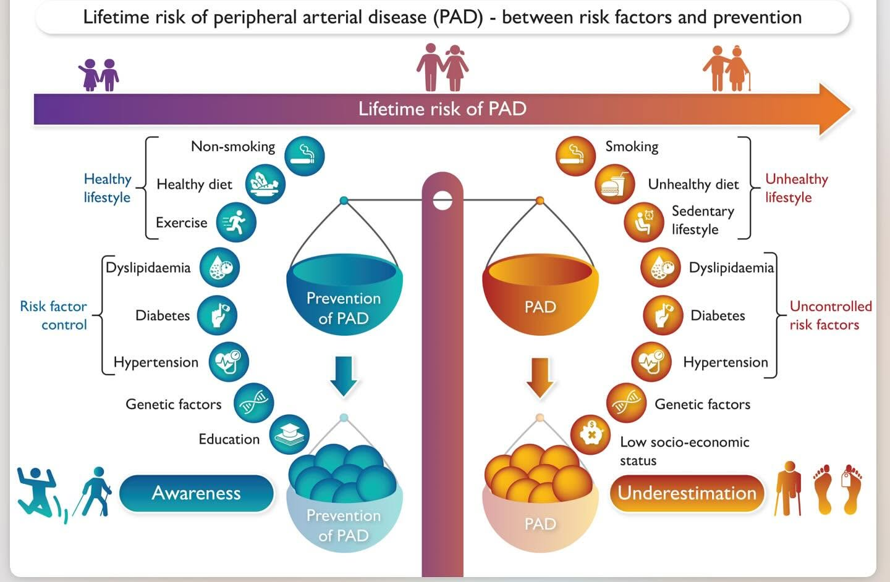

Peripheral artery disease (PAD) is a life-threatening condition, yet it remains underdiagnosed & undertreated.
A new cohort study from Denmark in the European Heart Journal, provides a stark reminder of the burden and deadly consequences of peripheral artery disease (PAD). In general, PAD indicates a high atherosclerotic burden. Patients with PAD often have polyvascular atherosclerosis, including of the coronary and carotid arteries, and are at high risk for CV and limb events.
Paper · European Heart Journal · 2025Lifetime risk of lower extremity peripheral arterial disease: a Danish nationwide longitudinal studyBackground and Aims Lower extremity peripheral arterial disease (PAD) presents a substantial disease burden, yet lifetime estimates remain scant. This nationwide study quantified the lifetime risk of PAD and its clinical outcomes in Denmark. Methods This cohort study included 4 275 631 individuals in Denmark aged 40–99 years between 1998 and 2018. We estimated the lifetime risk using a modified survival analysis…doi.org
In this study of 4.2M adults, 1 in 5 people over 40 developed PAD in their lifetime:
❗ Within the first year after diagnosis:
- 16% of PAD patients died
- 8% required major limb amputation
- 21% underwent revascularization
❗ Within five years of diagnosis:
- 40% of PAD patients had died
- Over 10% had lost a limb
This study reinforces what previous research has shown: PAD is a life-threatening condition, yet it remains underdiagnosed & undertreated.
Why Does PAD Get Overlooked?
Unlike coronary artery disease, PAD often lacks the attention it deserves—even though it signifies widespread atherosclerosis and a high risk of heart attack, stroke, death.
🔹 Delayed Diagnosis: PAD symptoms are often mistaken for aging or arthritis, leading to late detection when the disease is already advanced.
🔹 Gender Disparities: Women are diagnosed later than men, often with more comorbidities and at a more advanced stage, leading to worse outcomes.
🔹 Socioeconomic Barriers: Individuals with lower education levels and those living alone face higher risks of PAD, amputation, and death.
🔹 Lack of Preventive Screening: Many patients with PAD are asymptomatic or have mild symptoms. Without routine screening, many go undiagnosed until severe complications arise.
The Solution: Prevention and Early Intervention
We know what works—but awareness and implementation lag behind.
✅ Lifestyle changes are powerful: A healthy diet, regular exercise, and smoking cessation could prevent >70% of PAD
✅ Early screening is essential: Measuring the ankle–brachial index (ABI) can detect PAD before symptoms appear.
✅ Treat PAD like CAD: Patients with PAD should receive aggressive risk factor management, including LDL-lowering therapy, blood pressure control, and antithrombotic treatment.
